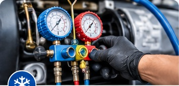
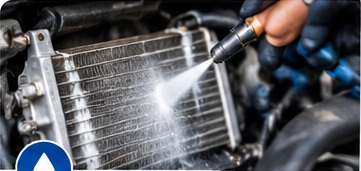
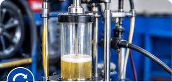
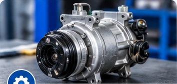
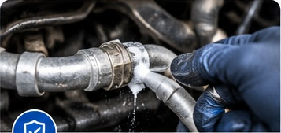
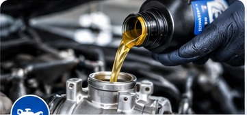

Service AC Mobil
Pemeriksaan dan perawatan sistem AC kendaraan secara menyeluruh.
ATIGA AC MOBIL
Pemeriksaan, perawatan, diagnosis, dan perbaikan AC mobil dengan pengerjaan teliti dan pelayanan transparan di Belitung Timur.
KENYAMANAN BERAWAL DARI AC YANG TERAWAT
ATIGA AC MOBIL merupakan bengkel spesialis AC mobil yang berfokus pada pelayanan pemeriksaan, perawatan, dan perbaikan sistem pendingin udara kendaraan.
Kami mengutamakan ketelitian dalam pemeriksaan, ketepatan diagnosis, serta kualitas pengerjaan untuk membantu menjaga performa dan kenyamanan AC kendaraan pelanggan.
Kunjungi bengkel kami →Solusi pemeriksaan dan perawatan sistem AC mobil sesuai kondisi kendaraan Anda.
Pemeriksaan dan perawatan sistem AC kendaraan secara menyeluruh.

02Pengisian refrigeran sesuai kebutuhan dan spesifikasi kendaraan.

03Membersihkan komponen sistem pendingin untuk membantu menjaga kinerja AC.

04Pembersihan sistem AC untuk membantu menghilangkan kontaminasi dan sisa kotoran.

05Pemeriksaan dan penanganan kerusakan kompresor AC mobil.

06Pemeriksaan dan penanganan kebocoran pada sistem AC.

07Penggantian oli kompresor sesuai spesifikasi yang direkomendasikan.
Pemeriksaan untuk mengetahui penyebab AC kurang dingin dan gangguan lainnya.
Setiap kendaraan memiliki kondisi yang berbeda. Karena itu, pemeriksaan dan penanganan dilakukan dengan memperhatikan kebutuhan kendaraan.
Booking via WhatsAppBerfokus pada sistem pendingin udara kendaraan roda empat.
Mengutamakan pemeriksaan untuk memahami sumber gangguan.
Memanfaatkan peralatan pendukung dalam proses pemeriksaan dan servis.
Penanganan dilakukan dengan memperhatikan kondisi kendaraan.
Informasi pemeriksaan dan kebutuhan penanganan disampaikan dengan jelas.
Suasana bengkel dan proses servis AC mobil ATIGA AC MOBIL.
Dokumentasi foto ATIGA AC MOBIL.
Percayakan pemeriksaan dan perawatan AC kendaraan Anda kepada ATIGA AC MOBIL.
Perumahan Pelangi Alam Timur Nomor B.51, Kolong Keroh, Desa Padang, Manggar, Belitung Timur
Petunjuk arah →Senin – Sabtu
08.00 – 17.00 WIB
Minggu: menyesuaikan